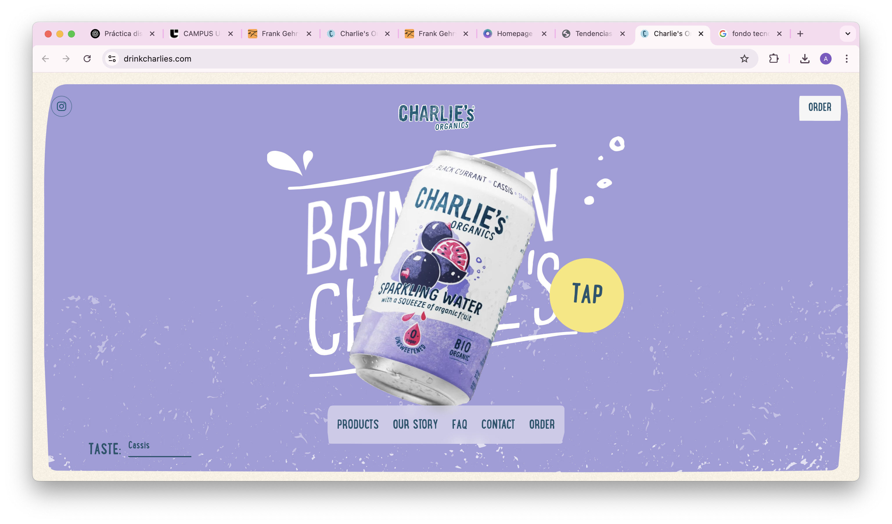
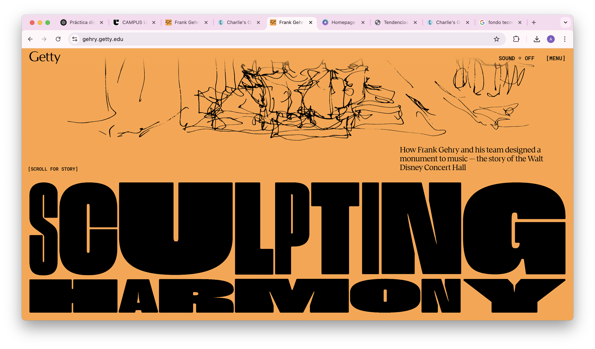

Premio: Awwwards

Accesibilidad:
Al entrar en la web de Canopy Planet, he utilizado la herramienta Lighthouse de Chrome para evaluar la accesibilidad, y la puntuación es bastante alta. Las imágenes tienen etiquetas alt, lo que ayuda a la navegación para personas con dificultades visuales, como aquellas que usan lectores de pantalla. Además, el contraste entre los textos y los fondos creo que es adecuado, lo que mejora la legibilidad. También intenté navegar utilizando solo el teclado y me di cuenta de que todos los menús, enlaces y botones son practicamente accesibles, lo que a su vez ayuda a tener una buena accesibilidad.
Puedo decir que es una web muy accesible, aunque seguro que hay cosas que se me han escapado y pueden mejorarse.
Responsividad:
El diseño responsive de la web es muy bueno. Utilicé la herramienta de inspección para simular diferentes dispositivos (móvil, tablet, ordenador) y vi que la página se adapta perfectamente a todos ellos. El menú se convierte en un icono tipo "hamburguesa" en dispositivos móviles, lo que ahorra espacio y no sobrecarga la vista. Los bloques de contenido y las imágenes se recolocan de manera fluida, por lo que se podría decir que han trabajado muy bien la adaptación a diferentes tamaños de pantalla. Además, la web es ligera, es decir que no tienen elementos como imágenes o vídeos de muchos peso que hacen que la web vaya más lenta, ayudando a que cargue rápido en dispositivos móviles, lo cual es un punto a favor para la experiencia del usuario.
SEO:
Hice una revisión con la herramienta Lighthouse y la web tiene una puntuación SEO alta, por lo que podemos decir que han trabajado bien la estructura. La web tiene un título y metadescripción, lo que mejora su visibilidad en los motores de búsqueda.
Diseño visual:
En cuanto a diseño, la web destaca por su diseño limpio y moderno, en la que usan colores pasteles y suaves como verdes y azules, que no solo reflejan la temática de sostenibilidad y bosques, sino que también transmiten calma y compromiso.
Visualmente, la web está bien equilibrada: no es ni recargada ni minimalista, lo que la hace un buen diseño en estos términos. Las animaciones son suaves, como el efecto fade-in de las imágenes, y las transiciones entre secciones que se hacen de manera fluida, lo que mejora la experiencia de navegación sin ser molesto o demasiado bruto. Estas animaciones no solo ayudan a la estética, sino que también guían al usuario por la web de manera sutil, sin interrumpir el flujo de la información. Si fuesen demasiado bruscas las animaciones, podrían distraer al usuario de la acción principal, o este simplemente cansarse y salirse de la web.
Experiencia de Usuario (UX):
La experiencia de usuario es muy intuitiva, o al menos eso creo yo. El menú superior es claro y directo, con las opciones necesarias a la vista.
Aunque hay bastante contenido, este está bien organizado en bloques, lo que facilita la lectura sin ser agobiante o demasiado. El sitio te lleva de manera natural a través de diferentes caminos según lo que busques, ya sea aprender más sobre las iniciativas o unirte a la causa.
Sin embargo, una crítica sería que en ocasiones el scroll se siente algo largo, con información repetida en varias secciones. Esto podría mejorarse con un menú lateral o un resumen visual que facilite la navegación. A pesar de que a nivel de accesibilidad está todo muy bien, sí que hay algunas cosas que podrían optimizar aún más, como algunos textos encima de imágenes que tienen poco contraste. Esto puede afectar a usuarios con dificultades visuales, por lo que sería ideal aumentar el contraste en ciertas áreas para mejorar la legibilidad.
Conclusión:
En general, la web de Canopy Planet está muy bien diseñada, tanto desde el punto de vista visual como funcional. Refuerza su mensaje de sostenibilidad a través de los colores y los textos, pero sin dejar de lado ningún punto importante.. Lo único que mejoraría es la accesibilidad en algunas partes como ya he dicho, sobre todo en los textos animados y el contraste de algunas zonas. La estructura del contenido también podría simplificarse para evitar la repetición, mejorando la fluidez de la navegación.
Premio: Webby Awards

Accesibilidad:
Esta web es bastante accesible, lo cual es genial. Los textos tienen un buen tamaño y el contraste entre el fondo y el texto hace que sea fácil de leer, lo que siempre ayuda, sobre todo a personas con dificultades visuales. Además, las imágenes tienen descripciones alt, lo que es un punto a favor para aquellos que usen lectores de pantalla. Sin embargo, estaría genial que añadieran una opción para aumentar el tamaño del texto o cambiar los colores, porque eso haría que la web sea aún más inclusiva para una gama más amplia de usuarios.
Otra cosa que deberían de tener en cuenta en el aspecto de la accesibilidad es el uso de animaciones, aquí hay algunas que pueden llegar a distraerse, o hacer que el scroll, al ser tan largo de aburra y te salgas de la página. A pesar de que me gusta mucho como llama la atención, y las opciones que tiene, puede que si fuese yo la diseñadora tratase de simplificar un poco más esa parte.
Responsividad:
El diseño responsive de la web está bastante bien. Al probar la página en móvil, tablet y ordenador, todo se adapta sin problemas y sin perder calidad ni nada importante. No hay nada que se corte o se vuelva difícil de navegar. La experiencia de navegación es muy fluida, como si estuvieras en un ordenador, lo cual es un gran plus. Da la sensación que desde el principio se pensó para adaptarse en todos los formatos, por eso el diseño es completamente full-screen y muy visual.
SEO:
La web está bien optimizada en cuanto a SEO según dice el informe sacado de Lighthouse. Usan etiquetas y metadescripciones, lo que ayuda a que sea más fácil de encontrar en motores de búsqueda. Además, la estructura está bien organizada, lo que facilita la navegación y mejora el rendimiento en los motores de búsqueda. Lo único malo es que le faltan algunos metadatos y etiquetas Open Graph, pero en general está bien preparada.
Diseño visual:
El diseño es súper interesante. Me encanta lo interactivo que es, yo lo veo más casi como una experiencia inmersiva más que una página normal. Tiene vídeos, sonido, y un recorrido interactivo por el Amazonas que mezcla texto, imágenes, animaciones y scroll horizontal. También es algo que logra engancharte y querer seguir bajando, ya que es muy narrativa, literalmente te cuenta una historia, y eso hace que te quedes más tiempo navegando.
Lo único que puede fallar un poco es la carga si tu conexión es lenta, porque pesa bastante por todas las imágenes y animaciones que tiene. Esto en parte también es lo que más me gusta, ya que las transiciones entre las secciones no son bruscas, sino que todo fluye de manera suave, lo que mejora mucho la experiencia de navegación. Es una web visualmente muy atractiva, sin llegar a ser abrumadora.
Experiencia de Usuario (UX):
La experiencia de usuario en esta web está muy bien desde mi punto de vista. La navegación es muy intuitiva y las secciones están bien distribuidas, lo que hace que todo sea fácil de encontrar. El hecho de que puedas llegar al mismo lugar desde varios lados lo hace simplemente perfecto para las distintas personas, ya que a lo mejor buscas algo más rápido y no puedes estar scrolleando media hora para llegar al contenido, por lo que vas a mapa o al menú y lo encuentras rápidamente, haciéndolo muchísimo más visual.
Las animaciones son suaves y no interrumpen el flujo de la página, lo que mejora la interacción sin ser molesto. Una pequeña crítica en relación a esto, sería que la página tiene una carga de contenido bastante densa, lo que puede hacer que el scroll se sienta un poco largo como acabo de mencionar, especialmente si se exploran todas las secciones. Pero esto ya lo han solucionado con ese resumen o índice en el menú.
Conclusión:
En general, la web de Rock Art of the Amazon es una experiencia visual y educativa impresionante que a mi parecer es de las mejores que he visto. Se sale de lo normal en cuanto a páginas web educativas, para ofrecer un contenido muchísimo más visual. La organización del contenido y las imágenes son lo que más destaca, ofreciendo una experiencia totalmente nueva para el usuario. Sin embargo, la accesibilidad podría mejorarse un poco, especialmente en lo que respecta a la opción de cambiar colores o ajustar tamaños de texto.
Premio: FWA - Site of the Day (2024)

Accesibilidad:
Al revisar la web de Drink Charlie’s con la herramienta Lighthouse, la verdad es que en cuanto a la accesibilidad está bastante bien. Los textos tienen buen contraste y tamaño, y se leen sin ningún problema, al igual que ocurre con los botones. Lo único malo es que no todos los elementos son accesibles con el teclado, lo que puede dificultar la navegación.
La mayoría de las imágenes tienen etiquetas alt, lo que ayuda a personas con dificultades visuales o que usen lectores de pantalla, pero algunos textos animados no.
Responsividad:
El diseño responsive de la web está bastante bien. Al probar la página en móvil, tablet y ordenador, todo se adapta sin problemas y sin perder calidad ni nada importante. No hay nada que se corte o se vuelva difícil de navegar. La experiencia de navegación es muy fluida, como si estuvieras en un ordenador, lo cual es un gran plus. Da la sensación que desde el principio se pensó para adaptarse en todos los formatos, por eso el diseño es completamente full-screen y muy visual. También ayuda que la página no sea demasiada pesada, a pesar de las animaciones, ya que carga bastante rápido.
SEO:
La web está bien optimizada en cuanto a SEO según dice el informe sacado de Lighthouse. Aunque según dice este mismo no utiliza metadescripciones, que es lo que ayuda a que sea más fácil de encontrar en motores de búsqueda. Por eso me extraña que tenga un 92% de puntuación, pero sin embargo, supongo que el hecho de que la estructura esté bien organizada, facilitando la navegación, ayuda a mejorar el rendimiento en los motores de búsqueda.
Diseño visual:
La página la primera vez que entré me pareció muy divertida y completa, me recordó a algunos ejemplos que vimos el semestre pasado en la clase de diseño interactivo. El estilo es moderno y con colores suaves, que encajan muy bien con la imagen de la marca que parecen querer dar.
Las animaciones son geniales, especialmente cuando interactúas con la página. Esto te ayuda a mantener la concentración en la página, es divertido como cuando clickeas la lata cambia de sabor, y cómo al bajar sigue habiendo pequeñas animaciones como hover on o pequeños elementos que captan la atención del usuario.
Desde mi punto de vista el diseño tiene mucha personalidad, lo que hace que la experiencia sea divertida y única. La paleta de colores y los efectos visuales son súper atractivos.
Experiencia de Usuario (UX):
La UX es divertida, creo que consigue mantener la atención del usuario gracias a las animaciones y las distintas interacciones. Además estas animaciones no son como otras que podrían llegar a distraerte, sino que todas giran en torno al producto que promocionan, y en sí siguen la misma estética, por lo que no hay nada que sobresalga. La navegación en móviles y tabletas es bastante buena, dentro de lo que cabe carga bastante rápido en cualquier dispositivo y se adapta bien.
Conclusión:
Charlie’s Drink es una web moderna y fresca con un diseño llamativo. Si bien la experiencia visual es divertida y única, algunas mejoras en accesibilidad y añadir meta descripciones para optimizar el SEO podrían hacer que sea aún mejor. En general, es una web que destaca por su personalidad, pero que podría pulirse un poco más en cuanto a usabilidad.
>
Premio: Mejor Experiencia Interactiva en los FWA 2024

Accesibilidad:
La web está bastante bien optimizada en cuanto a accesibilidad, es más tiene una muy buena puntuación en el informe de lighthouse. El contraste entre los textos y el fondo es muy bueno, lo que hace que sea fácil de leer. La navegación también es bastante sencilla, pero volvemos a lo mismo que con la web de National Geographic, las animaciones pueden ser un problema para personas con sensibilidad visual, es algo que ahora en las webs actuales es de mucha ayuda ya que ayuda a mantener la atención del usuario, pero hay que pensar en esas personas a las que puede distraer o inclusive no poder verlas por problemas de salud. .
Lo ideal sería tener una opción para desactivar las animaciones para quienes lo necesiten, al igual que se puede hacer con la música. Además, las descripciones alt para algunas imágenes podrían mejorarse, para garantizar una accesibilidad total.
Responsividad:
La web responde muy bien en todos los dispositivos. Si entras desde tu teléfono o tableta, todo se adapta bien y no se pierden detalles importantes. Las imágenes y los textos se reorganizan bien para que todo sea legible y visualmente atractivo, sin importar el tamaño de la pantalla. La experiencia en dispositivos móviles es tan buena como en el ordenador, al menos probándolo desde la pestaña de inspeccionar.
SEO:
La web está bastante bien optimizada para SEO. Las metaetiquetas ayudan a que sea fácil encontrar la página en los motores de búsqueda. Además, la web carga rápido, lo que siempre es un plus para mantener la experiencia de usuario fluida y agradable. Un par de ajustes pequeños en cuanto a palabras clave podrían mejorar aún más la visibilidad en los resultados de búsqueda.
Diseño visual:
El diseño de la web es en mi opinión impresionante. Al igual que la de National Geographic lo considero más una experiencia inmersiva que una página web, es completamente interactiva haciendo muy interesante la navegación.
Está todo súper bien organizado, con imágenes espectaculares de los proyectos de Gehry, lo que hace que la navegación sea visualmente atractiva. Las transiciones entre las secciones son suaves, lo que mejora la experiencia de navegación de manera sutil y elegante. El estilo de la web refleja perfectamente el trabajo de Gehry, y las animaciones no son invasivas, sino que complementan la estética de la página.
Experiencia de Usuario (UX):
La experiencia de usuario en esta web es muy buena. La navegación es fluida y no hay demasiados obstáculos, lo único es que se te puede hacer pesado tener que deslizar tanto, ya que generalmente te entretienes en ciertas partes debido a todos los elementos interactivos que tiene como las letras moviéndose o apareciendo al pasar el cursor por encima. Las imágenes y los textos los vemos de manera que se puede ver todo perfectamente, gracias al contraste. Además, entre el texto e imágenes, cuando vemos los proyectos, no hay tantas distracciones.
Las transiciones suaves entre las secciones ayudan a que la experiencia sea muy agradable y relajada. Lo único que puedo ponerle cómo pega es que este tipo de páginas no son para todo el mundo, creo que debería haber algún modo para llegar más rápido a los trabajos, y poder visualizarlos de manera más sencilla.
Conclusión:
El sitio web de Getty Museum - Gehry está muy bien diseñado, tanto visualmente como en términos de usabilidad. En sí todo parece funcionar bien y la experiencia de navegación es fluida y agradable. Creo que podrían añadir algunas pequeñas mejoras en la accesibilidad, como la opción de desactivar las animaciones, que podrían hacer que la web sea aún mejor.